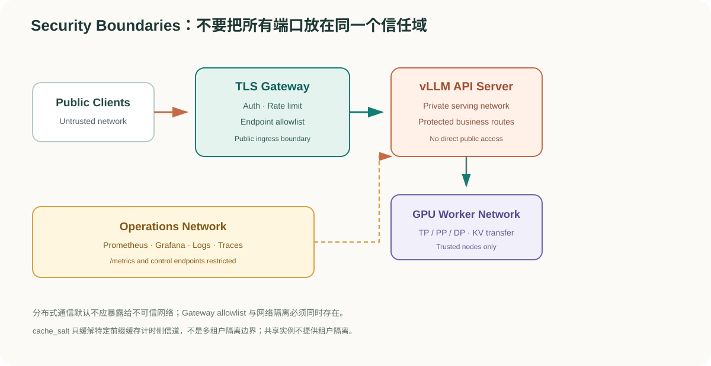

第 18 章 · 生产部署、观测与可靠性
Security & Multi-tenancy：保护推理服务边界
推理服务暴露的不只是一个 Chat Completions URL。它还可能暴露模型信息、指标、运维控制端点、分布式通信端口与共享缓存。安全设计必须同时覆盖网络、身份、资源、数据、模型制品和多租户隔离。
一个常见误区是：启动 vLLM 时加上 --api-key，服务就已经安全。实际上，API Key 只保护指定路径前缀中的部分 HTTP API；同一个服务器上还有未受该认证保护的推理、运维和监控端点。更深一层，多个租户如果共享同一个 vLLM 进程，也会共享调度器和缓存状态。要建立安全边界，必须先明确哪些组件和数据可以被谁访问。
读完这一章，你应该能够
- 画出 Gateway、vLLM HTTP Server、GPU Worker 和内部通信网络的信任边界。
- 解释当前 vLLM API Key 认证覆盖哪些路径，以及为什么还需要反向代理 allowlist。
- 识别分布式通信、KV transfer 与管理端点的网络风险。
- 区分 cache_salt 的侧信道缓解作用与真正的租户隔离。
- 设计输入限制、工具授权、日志脱敏和模型制品供应链策略。

18.1 先定义信任边界
把风险按数据流拆成五类：
- 身份与访问：谁可以调用哪个模型、使用多少 token、访问哪些 endpoint？
- 网络与控制平面：谁可以连接 API Server、分布式通信端口、KV transfer、运维控制和 Metrics？
- 资源耗尽：谁可以发送超长 Prompt、大批多模态媒体、过高并发或大量输出请求？
- 数据隔离：不同租户是否共享 Prefix Cache、媒体缓存、模型状态和日志？
- 供应链与应用：镜像、模型权重、Tokenizer、远程代码、工具调用和 RAG 数据是否可信？
安全不是一个开关，而是多个边界共同工作。Gateway 负责外部身份与策略；Kubernetes NetworkPolicy / 防火墙控制可达性；vLLM 参数限制推理资源；应用层控制工具权限与数据访问。
18.2 API Key 不等于完整安全网关
当前 vLLM 的 --api-key（或 VLLM_API_KEY）为 HTTP Server 提供 Bearer Token 认证，但官方 Security 文档明确说明，它只覆盖 /v1、/v2、/inference 和 /cohere 等指定路径前缀。其他端点可能不受该认证保护。
未受 API Key 保护的端点类别包括：
- 部分推理 API，例如
/invocations、/pooling、/classify、/score和/rerank。 - 运维控制，例如
/pause、/resume、/abort_requests、/update_weights，以及按配置启用的其他控制接口。 - 工具端点，例如
/metrics、/health、/version、/tokenize等。 - 仅在开发或特定功能开启时暴露的调试、Profiler、Tokenizer 信息等端点。
因此，生产环境应把 vLLM 放在受控私网中，并在 Nginx、Envoy 或 Kubernetes Gateway 上实施显式 endpoint allowlist：只开放业务真正需要的 API，拒绝其余推理与运维路径。Prometheus 抓取 /metrics 应来自受信任的监控网络，而不是公网。
API Key 不是 RBAC，也不是租户隔离。它不能替代每用户身份、模型级授权、租户配额、审计和网络边界。不能因为客户端请求带了 Bearer Token，就允许它访问整个 vLLM HTTP Server。
18.3 分布式通信与网络隔离
vLLM 的多 GPU / 多节点执行依赖 PyTorch Distributed、NCCL 以及可能的 KV Cache Transfer。官方安全文档指出，这些节点间通信默认并不自动获得端到端加密或完整认证保护；PyTorch TCPStore 等底层服务也可能监听网络接口。
建议把网络拆成至少三个逻辑平面：
- 外部入口平面：只允许客户端访问 TLS Gateway 的必要端口。
- 推理服务平面：Gateway / Router 可以访问 vLLM API；普通客户端不能直连 Engine Pod。
- 节点间通信平面：TP / PP / DP 通信与 KV transfer 只允许可信节点或明确的 Pod 网络范围访问。
在 Kubernetes 中可以使用 NetworkPolicy 控制 Pod ingress / egress；在裸机或多节点部署中使用防火墙和隔离网络。配置 default-deny egress 时，别忘了为 DNS、模型存储、监控与必要的内部服务显式开通流量。
18.4 多租户、共享缓存与 cache_salt
当前 vLLM Security 文档明确指出：共享同一个 vLLM server process 的不同租户之间，没有完整的租户隔离。不同调用者的请求会共同进入调度器并共享缓存。cache_salt 可以缓解特定 Prefix Cache 风险，但不是隔离边界。
为什么共享 Prefix Cache 会有安全含义？如果两个租户共享相同前缀的缓存，一个租户可能通过 TTFT 差异推断另一个租户是否访问过某段前缀。这是一种 timing side channel，而不是直接读出 KV Tensor 的攻击。
cache_salt 会被混入首个 KV Cache block 的哈希。只有携带相同 salt 的请求才能共享相应前缀缓存。安全使用时应：
- 在 Gateway 端为每个租户生成并注入随机、不可预测的 secret salt。
- 不要把用户名、租户 ID 等可猜测标识直接当作 salt。
- 对需要更强隔离的场景，为租户部署独立 vLLM 实例。
- 对多模态请求，按租户作用域管理客户端提供的媒体 UUID 等缓存标识。
Salt 的代价是降低跨租户缓存复用率。它是隐私与性能之间的权衡机制，不应被描述成“共享进程已经安全隔离”。
18.5 资源耗尽与请求限制
GPU 推理是一种昂贵的共享资源。攻击者不一定需要执行代码，只要持续发送长 Prompt、高输出上限、大批媒体或大量并发请求，就可能让其他用户的延迟和可用性恶化。
建议在多个层次建立限制：
- Gateway：每身份请求速率、并发连接数、请求体大小、每日 token 配额和模型访问范围。
- vLLM：合理设置上下文长度、最大输出 token、并发序列、日志概率请求上限和多模态媒体下载 / 解码限制。
- 应用层：对上传文件、图片分辨率、音视频时长、批次大小和工具调用次数设定业务约束。
- 观测与告警：跟踪队列、KV Cache、抢占、请求长度分布和单租户资源消耗。
不要把所有限制只放在模型 Prompt 中。服务端必须在模型开始执行之前验证请求资源预算；客户端声明的用户、租户或 cache_salt 也必须由可信 Gateway 绑定，而不是任由不可信调用者伪造。
18.6 Prompt Injection、工具权限与供应链
Prompt Injection 是应用层的指令与数据边界问题。模型可能把用户输入、检索内容或网页内容当成指令；仅靠 system prompt 分隔符、关键词过滤或输出正则，不能构成可靠的授权系统。
对会调用工具的应用，应该把权限放在工具执行层：
- 工具按用户身份执行授权检查，模型不能自行提升权限。
- RAG 检索在数据源层执行 ACL 过滤，不能只在 Prompt 中声明“不要读取机密”。
- 模型生成的 SQL、Shell、代码和 URL 在执行前必须经过策略检查或沙箱。
- 结构化输出需要 Schema 校验，但业务语义、数据范围和操作权限仍要二次验证。
供应链方面，固定 Docker image digest 和模型 revision；对 trust_remote_code 保持显式审查；限制镜像仓库、模型存储与下载凭证；不要在生产开启 vLLM Development Mode 或不必要的 Profiler / Tokenizer 信息端点。
日志也要按敏感数据处理：优先记录 request ID、模型版本、耗时、token 数、错误类别等必要元数据；Prompt、Completion、Authorization Header、媒体内容和工具输出需要明确的脱敏、保留周期与访问权限。
18.7 生产安全检查单
- vLLM API Server 是否只在私网监听，公网是否只能到达 Gateway？
- Gateway 是否采用 endpoint allowlist，而不是只配置 API Key？
/metrics、/health、运维控制与调试端点是否仅对受信任网络开放？- 多节点分布式通信与 KV transfer 是否限制在可信节点网络？
- 多租户是否明确选择独立实例，或由 Gateway 注入租户作用域的 cache_salt / UUID？
- 请求体、上下文、输出长度、多模态负载、并发与 token 配额是否受限？
- 工具、RAG 数据与外部动作是否在应用执行层进行授权？
- 镜像、模型、Tokenizer、远程代码、Secret 与日志是否纳入供应链和数据治理？
本章自检
- 为什么
--api-key不能作为 vLLM 生产环境唯一的安全措施？ - 为什么分布式通信和 KV transfer 需要单独的网络隔离？
- cache_salt 能缓解什么风险？它不能解决什么问题？
- 为什么 Prompt Injection 防护必须落实到工具和数据访问授权？
- 哪些内容不适合成为 Prometheus label，却可能需要写入受控 Trace 或日志？
第五批到这里完成：生成控制、生产部署、Kubernetes、可观测性与安全边界形成了从单请求到生产集群的工程闭环。
参考资料与源码入口
- vLLM 官方：Security，API Key 限制、未保护端点、网络隔离、多租户与 Cache Salting。
- Kubernetes：Network Policies。
- vLLM：Production Metrics，安全地暴露与抓取监控指标。
- vLLM 源码：Security implementation guidance。
- 研究背景：Leaking Secrets from Prefix Caches，Prefix Cache timing side-channel 研究。
安全端点列表会随 vLLM 功能和版本变化。部署升级时必须重新检查目标版本 Security 文档，并对实际 HTTP 路由执行访问控制测试。